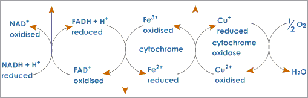
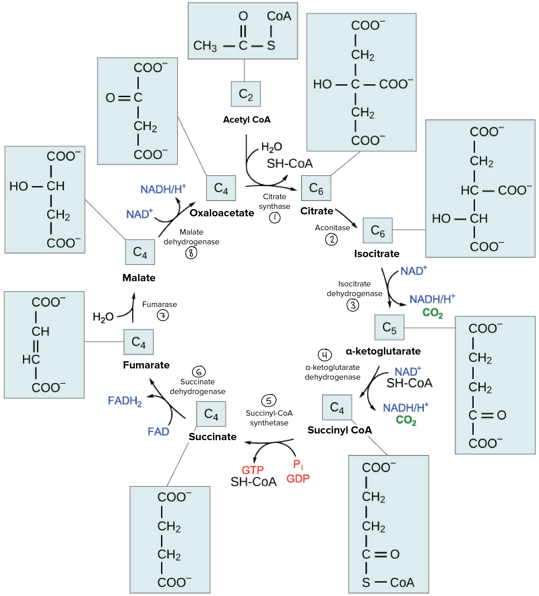

Oxidative Phosphororylation
Basic
You like many organisms require oxygen to live. But have you ever wondered what your body does with all that oxygen?
The reason your body needs all of this oxygen is so that your cells can use it during Oxidative Phosphororylation, the last step in cellular respiration. Oxidative Phosphororylation is made up of two closely connected components: the electron transport chain and chemiosmosis. In the electron transport chain electrons are passed from one molecule to another and electrochemical energy is released from this process. In chemiosmosis, the stored energy is used to make ATP.
Oxygen fits into this picture by sitting at the end of the electron transport chain, where it accepts electrons and picks up protons to form water. If oxygen isn't present to accept electrons the electron transport chain will stop running, and ATP will no longer be produced by chemiosmosis.
Advanced
Electron Transport Chain
- Two electrons are passed from NADH into the NADH dehydrogenase complex. Coupled with this transfer is the pumping of one hydrogen ion for each electron
- The two electrons are transfered to ubiquinone. Ubiquinone is called a mobile transfer molecule because it moves the electrons to the cytochrome b-c1 complex.
- Each electron is then passed from the cytchrome b-c1 complex to cytochrome c. Cytochrome c accepts each electron one at a time. One hydrogen ion is pumped through the complex as each electron is transfered.
- The next major step occurs in the cytochrome oxidase complex. This step requires four electrons. These four electrons interact with a molecular oxygen molecule and eight hydrogen ions. The four electrons, four of the hydrogen ions, and the molecular oxygen, are used to form two water molecules. The other four hydrogen ions are pumped across the membrane.
- The hydrogen pumping steps creates a gradient. The potential energy in this gradient is used by ATP synthase to form ATP from ADP and inorganic phosphate.
Calvin Cycle
Basic
In plants Carbon dioxide enters the interior of the leaf through via the stomata and diffuses into the stroma of the chloroplast--the site of the Calvin cycle reactions, where sugar is synthesized.In the calvin cycle, carbon atoms from carbon dioxide are fixed and used to build three-carbon sugars. This process is fueled by ATP and NADPH from the light reactions. Unlike the light reactions, which take place in the thylakoid membrane, the reaction of the Calvin cycle takes place in the stroma.
Advanced
The Calvin Cycle is divided into three different stages: Carbon fixation, reduction and regeneration of the starting molecule.
Carbon fixation
A CO₂ molecule combines with a five-carbon acceptor molecule, ribulose-1,5-bisphosphate (RuBP). This creates a six-carbon compound which splits into two three-carbon compounds, 3-phosphoglyceric acid(3-PGA). This reaction catalyzes into-
Reduction
ATP and NADH are used to convert the 3-pga into molecules of three carbon sugar, glyceraldehyde-3-phosphate(G3P) . This stage is called reduction because NADPH donates electrons to reduce three-carbon intermitent to make G3P. -
Regeneration
Some G3P molecules make glucose while others must be recycled to regenerate the RuBP acceptor.
Three turns of the calvin cycle are needed to make one G3P that can exit the cycle and go toward making glucose.
Krebs Cycle
Basic
In eukaryotic organisms the krebs cycle takes place in the matrix of the mitochondria. In prokaryotes it takes place in the cytoplasm. The krebs cycle is a closed loop, the last step creates a pathway to restart the cycle. The cycle contains eight major steps.
First, acetyl CoA combines with a four-carbon acceptor molecule to form a six carbon molecule called citrate. Then the six-carbon molecule releases two of its carbons carbon dioxide in a pair of similar reactions, producing a molecule of NADH each time.

The remaining four-carbon molecule goes under a series of reactions making an ATP molecule then reducing the electron carrier from FAD to FADH2, and finally regenerates another NADH
Overall one turn of the Kreb cycle releases two carbon dioxide molecules and produces three NADH, one FADx2 and one ATP. The cycle goes around twice for every glucose molecule present in respiration.
Advanced
- In the first step of the citric acid cycle, acetyl CoAC, o, A joins with a four-carbon molecule, oxaloacetate, releasing the CoAC, o, A group and forming a six-carbon molecule called citrate.
- In the second step, citrate is converted into its isomer, isocitrate. This is actually a two-step process, involving first the removal and then the addition of a water molecule, which is why the citric acid cycle is sometimes described as having nine steps—rather than the eight listed here^3 3 start superscript, 3, end superscript.
- In the third step, isocitrate is oxidized and releases a molecule of carbon dioxide, leaving behind a five-carbon molecule—α-ketoglutarate. During this step, NAD + N, A, D, start superscript, plus, end superscript is reduced to form \text{NADH}NADHN, A, D, H. The enzyme catalyzing this step, isocitrate dehydrogenase, is important in regulating the speed of the citric acid cycle. 
- The fourth step is similar to the third. In this case, it’s α-ketoglutarate that’s oxidized, reducing NAD + N, A, D, start superscript, plus, end superscript to NADHN, A, D, H and releasing a molecule of carbon dioxide in the process. The remaining four-carbon molecule picks up Coenzyme A, forming the unstable compound succinyl CoAC, o, A. The enzyme catalyzing this step, α-ketoglutarate dehydrogenase, is also important in regulation of the citric acid cycle.
- In step five, the CoAC, o, A of succinyl CoAC, o, A is replaced by a phosphate group, which is then transferred to ADPA, D, P to make ATPA, T, P. In some cells, GDPG, D, P—guanine diphosphate—is used instead of ADPA, D, P, forming GTPG, T, P—guanine triphosphate—as a product. The four-carbon molecule produced in this step is called succinate.
- In step six, succinate is oxidized, forming another four-carbon molecule called fumarate. In this reaction, two hydrogen atoms—with their electrons—are transferred to FADF, A, D, producing 2FADH 2 F, A, D, H, start subscript, 2, end subscript. The enzyme that carries out this step is embedded in the inner membrane of the mitochondrion, so 2FADH 2 F, A, D, H, start subscript, 2, end subscript can transfer its electrons directly into the electron transport chain.
- In step seven, water is added to the four-carbon molecule fumarate, converting it into another four-carbon molecule called malate.
- In the last step of the citric acid cycle, oxaloacetate—the starting four-carbon compound—is regenerated by oxidation of malate. Another molecule of NAD + N, A, D, start superscript, plus, end superscript is reduced to NADHN, A, D, H in the process.